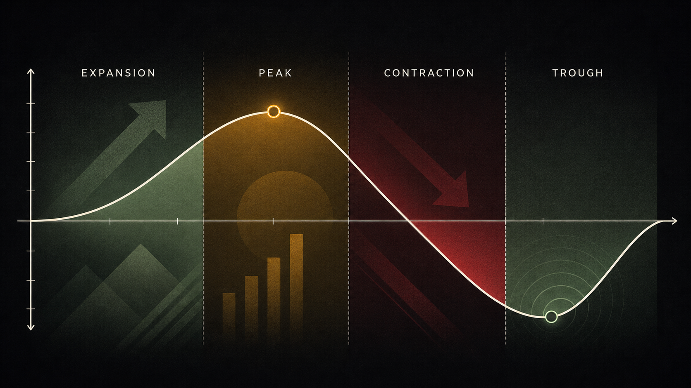
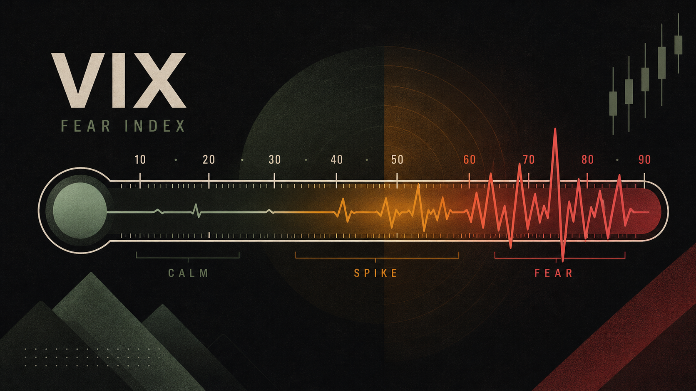
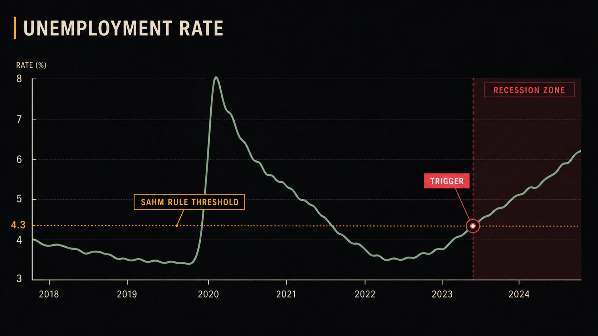

有没有注意到，2022年能源股涨了+60%，同年科技股跌了−30%？这不是运气，也不是巧合——是经济周期在按照某种规律旋转。理解这个规律，你就能在大多数人困惑时，找到相对清晰的方向。
GICS 11 个板块——美股的「行政区划」
美国股市有超过5000只上市股票，如果每一只都要单独研究，人一辈子都看不完。所以，投资界按照行业把它们归类为11个大板块（Sector），这套分类标准叫做 GICS（Global Industry Classification Standard，全球行业分类标准），由标普和明晟于1999年联合推出，是全球最通用的股票行业分类体系。
记住这11个板块，就像记住了美股世界的「地图」：
| 板块 | 英文 | 代表公司 | ETF |
|---|---|---|---|
| 信息技术 | Technology | AAPL、MSFT、NVDA | XLK |
| 医疗健康 | Health Care | JNJ、UNH、LLY | XLV |
| 金融 | Financials | JPM、BAC、BRK.B | XLF |
| 工业 | Industrials | CAT、BA、HON | XLI |
| 可选消费 | Consumer Discretionary | AMZN、TSLA、HD | XLY |
| 必需消费 | Consumer Staples | KO、WMT、PG | XLP |
| 能源 | Energy | XOM、CVX、COP | XLE |
| 原材料 | Materials | LIN、FCX、NEM | XLB |
| 公用事业 | Utilities | NEE、DUK、SO | XLU |
| 房地产 | Real Estate | AMT、PLD、EQIX | XLRE |
| 通信服务 | Communication Services | META、GOOGL、NFLX | XLC |
这11个板块在标普500中的权重差别很大。2026年，信息技术板块一家就占标普500总权重的约35%，而公用事业和原材料加起来不到5%。这意味着，科技股的涨跌对整个指数的影响，远超其他任何板块。
还有一个实用视角：防御型板块（Defensive）vs 周期型板块（Cyclical）。必需消费、公用事业、医疗——无论经济好坏，人们都要吃饭、用电、看病，这些板块的盈利相对稳定，熊市中抗跌。相比之下，可选消费、工业、金融，景气时大涨，萧条时重跌，与经济周期高度同步。
经济周期与板块轮动时钟
如果你把经济比作四季，那么不同的季节，适合生长的作物也不同。这就是板块轮动（Sector Rotation）的核心逻辑：随着经济从复苏→扩张→顶部→衰退的循环，资金会从一个板块流向另一个板块。
点击时钟上的阶段查看对应强势板块
让我们把时钟拆开来看，每个阶段的特征和领涨板块：
领涨板块：金融（信贷扩张带来利差收入）、可选消费（消费者信心回升）、房地产。
典型案例：2009年3月−2010年，金融板块涨幅超100%。
领涨板块：信息技术（企业加大IT支出）、工业（制造与基建需求旺）。
典型案例：2016−2019年，科技板块年化涨幅远超大盘。
领涨板块：能源（大宗商品价格上涨）、原材料、公用事业。
典型案例：2021年底−2022年，能源板块年涨幅+65%。
领涨板块（抗跌）：必需消费（不能不喝可乐）、公用事业（不能不用电）、医疗健康。
典型案例：2022年全年，公用事业−1%，而成长股跌了30%−70%。
一个实用的「傻瓜看板块」方法：打开 finviz.com 的 Map 功能，按板块查看颜色深浅（深绿 = 强势，深红 = 弱势）。每周花5分钟扫一眼板块热力图，比看100篇分析报告更直观。

VIX——市场的恐慌温度计
VIX（Volatility Index，波动率指数），常被称为「恐慌指数」，是由芝加哥期权交易所（CBOE）计算发布的。它衡量的是市场参与者预期标普500指数在未来30天内的价格波动幅度——用期权的隐含波动率推算出来的。
VIX不是直接可以买卖的资产，但它的数值告诉你市场当前的「情绪体温」：
历史上VIX最极端的时刻：
- 2008年10月：金融危机最恐慌时，VIX冲到 80.86——股市在过去两周已经跌了20%，而大多数人以为这只是开始（实际上那是恐慌的顶峰）。
- 2020年3月16日：新冠疫情引发的恐慌，VIX达到 82.69，创历史新高。两周后的4月，标普500开始历史上最快的反弹。
- 平常时期：VIX的长期历史均值约为 19.5，但在2017年超低波动率时期，VIX甚至跌破了 10。
VIX还可以通过 VIX ETF/ETP 间接参与，如 UVXY（2倍做多VIX）、SVXY（做空VIX）。但这些产品因为期货展期损耗（Contango Roll），长期持有几乎必然亏损，只适合极短线交易或专业投机者使用。

Sahm 法则与衰退预警
Sahm 法则（Sahm Rule）是由前美联储经济学家克劳迪娅·萨姆（Claudia Sahm）提出的一个简单而有效的衰退指标，精准程度令人惊讶：
这个法则从未在1970年以来的每次美国衰退中失效。它的优势在于：它用的是实时可得的月度失业率数据，而GDP数据通常要等到衰退结束后几个月才被官方确认。
2024年8月，Sahm法则短暂触发（失业率从3.4%的低点上升到了4.3%），引发了市场短暂恐慌，美股单日大跌超3%。但随后数据好转，那次预警成为了「假触发」。克劳迪娅·萨姆本人也在那时公开表示：新冠后大量移民涌入推高劳动力供给，可能使这次的失业率上升与历史衰退时的情况不同。这也说明，任何指标都不是放之四海而皆准的，要结合背景判断。
除了Sahm法则，还有几个常用的衰退领先指标值得关注：
- 收益率曲线倒挂（Yield Curve Inversion）：10年期国债收益率低于2年期，历史上每次衰退前约12−18个月都会出现。2022年7月倒挂，2023年部分媒体大喊衰退来临，但直到2024年末，美国官方都未宣布衰退。倒挂给出时间窗口，但不告诉你具体何时。
- Conference Board领先经济指数（LEI）：综合了10个前瞻性数据的综合指数，连续多月下降通常是衰退的前兆。
- 制造业PMI：低于50代表制造业萎缩，是经济降温的早期信号。

宏观数据日历（美联储、CPI、非农）
美股是一个对宏观数据极其敏感的市场。几个关键的月度/季度数据发布日，往往会造成标普500单日1%−3%的波动——有时候市场的走势不取决于哪家公司发布了好财报，而取决于这周五早上8:30美国劳工部发布的那张就业报告。
最重要的宏观数据和发布频率：
读宏观数据，不是要预测市场，而是要理解市场正在害怕什么、期待什么——然后判断这种情绪是否已经过度。
— 改编自 Howard Marks《周期》如何跟踪这些数据？推荐以下几个免费工具：
- Investing.com 经济日历（investing.com/economic-calendar）：列出全球所有重要数据发布时间，可以按国家和重要性筛选，支持中文。
- FRED 数据库（fred.stlouisfed.org）：美联储圣路易斯分行维护的宏观数据库，超过50万个系列，免费下载和可视化。
- Atlanta Fed GDPNow：实时追踪GDP预测，每次重要数据发布后更新，不用等季度末。
- 美股按GICS分为11个板块，科技板块权重最大（约35%，2026年）。理解板块才能看懂资金流向。
- 经济周期决定板块轮动方向：复苏→金融/可选消费；扩张→科技/工业；过热→能源/材料；衰退→必需消费/公用事业/医疗。
- VIX是「恐慌温度计」：低于15代表平静，超过30代表恐慌。历史上VIX极端高点往往对应着好的买入机会——但需要强大心理和充足流动性。
- Sahm法则：3个月平均失业率比12个月最低点高出0.5%，即触发衰退预警。自1970年代以来准确率100%。
- 最重要的宏观数据：FOMC利率决议（每年8次）、CPI（每月中旬）、非农就业（每月第一个周五8:30 ET）、PCE（每月月末）。
- 宏观分析不是要精确预测市场，而是要理解市场情绪和资金流向的背后逻辑，避免在错误的时间逆势而为。
| 中文 | 英文 | 一句话解释 |
|---|---|---|
| GICS | Global Industry Classification Standard | 标普与明晟联合推出的全球股票行业分类体系，分11个板块 |
| 板块轮动 | Sector Rotation | 资金随经济周期在不同板块之间流动的现象 |
| 经济周期 | Business Cycle | 经济扩张与收缩交替出现的规律性波动 |
| 防御型板块 | Defensive Sectors | 必需消费、公用事业、医疗，景气度受经济周期影响小 |
| VIX | Volatility Index / Fear Index | CBOE恐慌指数，反映市场预期未来30天标普500的波动率 |
| Sahm法则 | Sahm Rule | 3个月失业率均值比12个月低点高0.5%即预示衰退 |
| FOMC | Federal Open Market Committee | 美联储的货币政策委员会，每年8次会议决定联邦基准利率 |
| CPI | Consumer Price Index | 消费者物价指数，衡量通货膨胀的最直观指标 |
| 非农就业 | Non-farm Payrolls | 美国每月新增非农就业人数，是最重要的劳动市场数据 |
| PCE | Personal Consumption Expenditures | 美联储最偏爱的通胀指标，覆盖比CPI更广泛的消费支出 |
| 收益率曲线倒挂 | Yield Curve Inversion | 2年期国债收益率高于10年期，历史上衰退前常见现象 |
根据板块轮动时钟，经济扩张中期（Mid Cycle）通常哪类板块表现最好？
VIX 指数超过 30，通常意味着什么？
Sahm 法则主要用于判断什么？